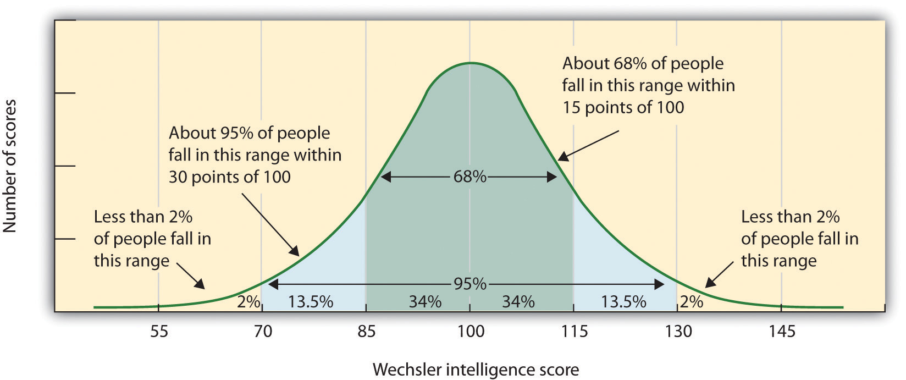
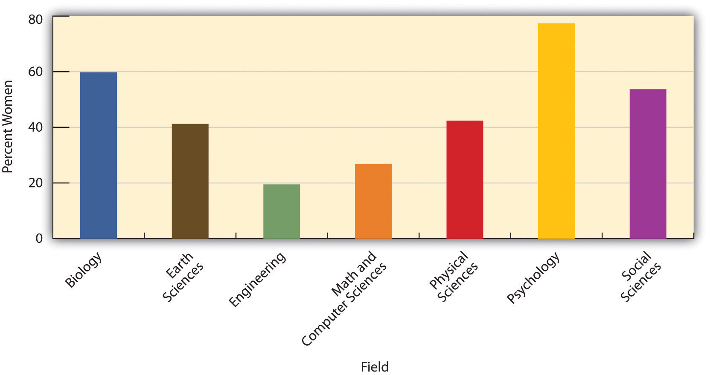
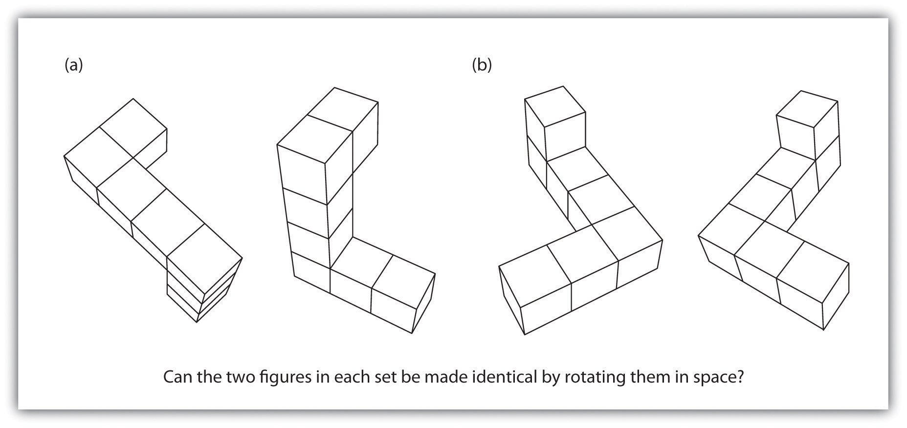

Intelligence is defined by the culture in which it exists. Most people in Western cultures tend to agree with the idea that intelligence is an important personality variable that should be admired in those who have it. But people from Eastern cultures tend to place less emphasis on individual intelligence and are more likely to view intelligence as reflecting wisdom and the desire to improve the society as a whole rather than only themselves (Baral & Das, 2004; Sternberg, 2007).Baral, B. D., & Das, J. P. (2004). Intelligence: What is indigenous to India and what is shared? In R. J. Sternberg (Ed.), International handbook of intelligence (pp. 270–301). New York, NY: Cambridge University Press; Sternberg, R. J. (2007). Intelligence and culture. In S. Kitayama & D. Cohen (Eds.), Handbook of cultural psychology (pp. 547–568). New York, NY: Guilford Press. And in some cultures, such as the United States, it is seen as unfair and prejudicial to argue, even at a scholarly conference, that men and women might have different abilities in domains such as math and science and that these differences might be caused by genetics (even though, as we have seen, a great deal of intelligence is determined by genetics). In short, although psychological tests accurately measure intelligence, it is cultures that interpret the meanings of those tests and determine how people with differing levels of intelligence are treated.
The results of studies assessing the measurement of intelligence show that IQ is distributed in the population in the form of a normal distribution (or bell curve)The pattern of scores usually observed in a variable that clusters around its average., which is the pattern of scores usually observed in a variable that clusters around its average. In a normal distribution, the bulk of the scores fall toward the middle, with many fewer scores falling at the extremes. The normal distribution of intelligence (Figure 9.6 "Distribution of IQ Scores in the General Population") shows that on IQ tests, as well as on most other measures, the majority of people cluster around the average (in this case, where IQ = 100), and fewer are either very smart or very dull. Because the standard deviation of an IQ test is about 15, this means that about 2% of people score above an IQ of 130 (often considered the threshold for giftedness), and about the same percentage score below an IQ of 70 (often being considered the threshold for mental retardation).
Although Figure 9.6 "Distribution of IQ Scores in the General Population" presents a single distribution, the actual IQ distribution varies by sex such that the distribution for men is more spread out than is the distribution for women. These sex differences mean that about 20% more men than women fall in the extreme (very smart or very dull) ends of the distribution (Johnson, Carothers, & Deary, 2009).Johnson, W., Carothers, A., & Deary, I. J. (2009). A role for the X chromosome in sex differences in variability in general intelligence? Perspectives on Psychological Science, 4(6), 598–611. Boys are about five times more likely to be diagnosed with the reading disability dyslexia than are girls (Halpern, 1992),Halpern, D. F. (1992). Sex differences in cognitive abilities (2nd ed.). Hillsdale, NJ: Lawrence Erlbaum Associates. and are also more likely to be classified as mentally retarded. But boys are also about 20% more highly represented in the upper end of the IQ distribution.
Figure 9.6 Distribution of IQ Scores in the General Population
The normal distribution of IQ scores in the general population shows that most people have about average intelligence, while very few have extremely high or extremely low intelligence.
One end of the distribution of intelligence scores is defined by people with very low IQ. Mental retardationA generalized disorder mostly found in males, ascribed to those who have an IQ below 70, who have experienced deficits since childhood, and who have trouble with basic life skills, such as dressing and feeding oneself and communicating with others. is a generalized disorder ascribed to people who have an IQ below 70, who have experienced deficits since childhood, and who have trouble with basic life skills, such as dressing and feeding oneself and communicating with others (Switzky & Greenspan, 2006).Switzky, H. N., & Greenspan, S. (2006). What is mental retardation? Ideas for an evolving disability in the 21st century. Washington, DC: American Association on Mental Retardation. About 1% of the United States population, most of them males, fulfill the criteria for mental retardation, but some children who are diagnosed as mentally retarded lose the classification as they get older and better learn to function in society. A particular vulnerability of people with low IQ is that they may be taken advantage of by others, and this is an important aspect of the definition of mental retardation (Greenspan, Loughlin, & Black, 2001).Greenspan, S., Loughlin, G., & Black, R. S. (2001). Credulity and gullibility in people with developmental disorders: A framework for future research. In L. M. Glidden (Ed.), International review of research in mental retardation (Vol. 24, pp. 101–135). San Diego, CA: Academic Press. Mental retardation is divided into four categories: mild, moderate, severe, and profound. Severe and profound mental retardation is usually caused by genetic mutations or accidents during birth, whereas mild forms have both genetic and environmental influences.
One cause of mental retardation is Down syndromeA chromosomal disorder leading to mental retardation and caused by the presence of all or part of an extra 21st chromosome., a chromosomal disorder leading to mental retardation caused by the presence of all or part of an extra 21st chromosome. The incidence of Down syndrome is estimated at 1 per 800 to 1,000 births, although its prevalence rises sharply in those born to older mothers. People with Down syndrome typically exhibit a distinctive pattern of physical features, including a flat nose, upwardly slanted eyes, a protruding tongue, and a short neck.
Societal attitudes toward individuals with mental retardation have changed over the past decades. We no longer use terms such as “moron,” “idiot,” or “imbecile” to describe these people, although these were the official psychological terms used to describe degrees of retardation in the past. Laws such as the Americans with Disabilities Act (ADA) have made it illegal to discriminate on the basis of mental and physical disability, and there has been a trend to bring the mentally retarded out of institutions and into our workplaces and schools. In 2002 the U.S. Supreme Court ruled that the execution of people with mental retardation is “cruel and unusual punishment,” thereby ending this practice (Atkins v. Virginia, 2002).Atkins v. Virginia, 536 U.S. 304 (2002).
Having extremely high IQ is clearly less of a problem than having extremely low IQ, but there may also be challenges to being particularly smart. It is often assumed that schoolchildren who are labeled as “gifted” may have adjustment problems that make it more difficult for them to create social relationships. To study gifted children, Lewis Terman and his colleagues (Terman & Oden, 1959)Terman, L. M., & Oden, M. H. (1959). Genetic studies of genius: The gifted group at mid-life (Vol. 5). Stanford, CA: Stanford University Press. selected about 1,500 high school students who scored in the top 1% on the Stanford-Binet and similar IQ tests (i.e., who had IQs of about 135 or higher), and tracked them for more than seven decades (the children became known as the “termites” and are still being studied today). This study found, first, that these students were not unhealthy or poorly adjusted but rather were above average in physical health and were taller and heavier than individuals in the general population. The students also had above average social relationships—for instance, being less likely to divorce than the average person (Seagoe, 1975).Seagoe, M. V. (1975). Terman and the gifted. Los Altos, CA: William Kaufmann.
Terman’s study also found that many of these students went on to achieve high levels of education and entered prestigious professions, including medicine, law, and science. Of the sample, 7% earned doctoral degrees, 4% earned medical degrees, and 6% earned law degrees. These numbers are all considerably higher than what would have been expected from a more general population. Another study of young adolescents who had even higher IQs found that these students ended up attending graduate school at a rate more than 50 times higher than that in the general population (Lubinski & Benbow, 2006).Lubinski, D., & Benbow, C. P. (2006). Study of mathematically precocious youth after 35 years: Uncovering antecedents for the development of math-science expertise. Perspectives on Psychological Science, 1(4), 316–345.
As you might expect based on our discussion of intelligence, kids who are gifted have higher scores on general intelligence (g). But there are also different types of giftedness. Some children are particularly good at math or science, some at automobile repair or carpentry, some at music or art, some at sports or leadership, and so on. There is a lively debate among scholars about whether it is appropriate or beneficial to label some children as “gifted and talented” in school and to provide them with accelerated special classes and other programs that are not available to everyone. Although doing so may help the gifted kids (Colangelo & Assouline, 2009),Colangelo, N., & Assouline, S. (2009). Acceleration: Meeting the academic and social needs of students. In T. Balchin, B. Hymer, & D. J. Matthews (Eds.), The Routledge international companion to gifted education (pp. 194–202). New York, NY: Routledge. it also may isolate them from their peers and make such provisions unavailable to those who are not classified as “gifted.”
As discussed in the introduction to Chapter 9 "Intelligence and Language", Lawrence Summers’s claim about the reasons why women might be underrepresented in the hard sciences was based in part on the assumption that environment, such as the presence of gender discrimination or social norms, was important but also in part on the possibility that women may be less genetically capable of performing some tasks than are men. These claims, and the responses they provoked, provide another example of how cultural interpretations of the meanings of IQ can create disagreements and even guide public policy. The fact that women earn many fewer degrees in the hard sciences than do men is not debatable (as shown in Figure 9.9 "Bachelor’s Degrees Earned by Women in Selected Fields (2006)"), but the reasons for these differences are.
Figure 9.9 Bachelor’s Degrees Earned by Women in Selected Fields (2006)
Women tend to earn more degrees in the biological and social sciences, whereas men earn more in engineering, math, and the physical sciences.
National Science Foundation (2010). Downloaded from: http://www.nsf.gov/statistics/nsf08321/content.cfm?pub_id=3785&id=2
Differences in degree choice are probably not due to overall intelligence because men and women have almost identical intelligence as measured by standard IQ and aptitude tests (Hyde, 2005).Hyde, J. S. (2005). The gender similarities hypothesis. American Psychologist, 60(6), 581–592. On the other hand, it is possible that the differences are due to variability in intelligence, because more men than women have very high (as well as very low) intelligence. Perhaps success in the mathematical and physical sciences requires very high IQ, and this favors men.
There are also observed sex differences on some particular types of tasks. Women tend to do better than men on some verbal tasks, including spelling, writing, and pronouncing words (Halpern et al., 2007),Halpern, D. F., Benbow, C. P., Geary, D. C., Gur, R. C., Hyde, J. S., & Gernsbache, M. A. (2007). The science of sex differences in science and mathematics. Psychological Science in the Public Interest, 8(1), 1–51. and they have better emotional intelligence in the sense that they are better at detecting and recognizing the emotions of others (McClure, 2000).McClure, E. B. (2000). A meta-analytic review of sex differences in facial expression processing and their development in infants, children, and adolescents. Psychological Bulletin, 126(3), 424–453.
On average, men do better than women on tasks requiring spatial ability, such as the mental rotation tasks shown in Figure 9.10 (Voyer, Voyer, & Bryden, 1995).Voyer, D., Voyer, S., & Bryden, M. P. (1995). Magnitude of sex differences in spatial abilities: A meta-analysis and consideration of critical variables. Psychological Bulletin, 117(2), 250–270. Boys tend to do better than girls on both geography and geometry tasks (Vogel, 1996).Vogel, G. (1996). School achievement: Asia and Europe top in world, but reasons are hard to find. Science, 274(5291), 1296. On the math part of the Scholastic Assessment Test (SAT), boys with scores of 700 or above outnumber girls by more than 10 to 1 (Benbow & Stanley, 1983),Benbow, C. P., & Stanley, J. C. (1983). Sex differences in mathematical reasoning ability: More facts. Science, 222(4627), 1029–1031. but there are also more boys in the lowest end of the distribution as well.
Figure 9.10
Men outperform women on measures of spatial rotation, such as this task requires, but women are better at recognizing the emotions of others.
Source: Adapted from Halpern, D. F., Benbow, C. P., Geary, D. C., Gur, R. C., Hyde, J. S., & Gernsbache, M. A. (2007). The science of sex differences in science and mathematics. Psychological Science in the Public Interest, 8(1), 1–51.
Although these differences are real, and can be important, keep in mind that like virtually all sex group differences, the average difference between men and women is small compared to the average differences within each sex. There are many women who are better than the average man on spatial tasks, and many men who score higher than the average women in terms of emotional intelligence. Sex differences in intelligence allow us to make statements only about average differences and do not say much about any individual person.
Although society may not want to hear it, differences between men and women may be in part genetically determined, perhaps by differences in brain lateralization or by hormones (Kimura & Hampson, 1994; Voyer, Voyer, & Bryden, 1995).Kimura, D., & Hampson, E. (1994). Cognitive pattern in men and women is influenced by fluctuations in sex hormones. Current Directions in Psychological Science, 3(2), 57–61; Voyer, D., Voyer, S., & Bryden, M. P. (1995). Magnitude of sex differences in spatial abilities: A meta-analysis and consideration of critical variables. Psychological Bulletin, 117(2), 250–270. But nurture is also likely important (Newcombe & Huttenlocker, 2006).Newcombe, N. S., & Huttenlocher, J. (2006). Development of spatial cognition. In D. Kuhn, R. S. Siegler, W. Damon, & R. M. Lerner (Eds.), Handbook of child psychology: Cognition, perception, and language (6th ed., Vol. 2, pp. 734–776). Hoboken, NJ: John Wiley & Sons. As infants, boys and girls show no or few differences in spatial or counting abilities, suggesting that the differences occur at least in part as a result of socialization (Spelke, 2005).Spelke, E. S. (2005). Sex differences in intrinsic aptitude for mathematics and science? A critical review. American Psychologist, 60(9), 950–958. Furthermore, the number of women entering the hard sciences has been increasing steadily over the past years, again suggesting that some of the differences may have been due to gender discrimination and societal expectations about the appropriate roles and skills of women.
Although their bell curves overlap considerably, there are also differences in which members of different racial and ethnic groups cluster along the IQ line. The bell curves for some groups (Jews and East Asians) are centered somewhat higher than for Whites in general (Lynn, 1996; Neisser et al., 1996).Lynn, R. (1996). Racial and ethnic differences in intelligence in the United States on the differential ability scale. Personality and Individual Differences, 20(2), 271–273; Neisser, U., Boodoo, G., Bouchard, T. J., Jr., Boykin, A. W., Brody, N., Ceci, S. J.,…Urbina, S. (1996). Intelligence: Knowns and unknowns. American Psychologist, 51(2), 77–101. Other groups, including Blacks and Hispanics, have averages somewhat lower than those of Whites. The center of the IQ distribution for African Americans is about 85, and that for Hispanics is about 93 (Hunt & Carlson, 2007).Hunt, E., & Carlson, J. (2007). Considerations relating to the study of group differences in intelligence. Perspectives on Psychological Science, 2(2), 194–213.
The observed average differences in intelligence between groups has at times led to malicious and misguided attempts to try to correct for them through discriminatory treatment of people from different races, ethnicities, and nationalities (Lewontin, Rose, & Kamin, 1984).Lewontin, R. C., Rose, S. P. R., & Kamin, L. J. (1984). Not in our genes: Biology, ideology, and human nature (1st ed.). New York, NY: Pantheon Books. One of the most egregious was the spread of eugenicsThe misguided proposal that one could improve the human species by encouraging or permitting reproduction of only those people with genetic characteristics judged desirable., the proposal that one could improve the human species by encouraging or permitting reproduction of only those people with genetic characteristics judged desirable.
Eugenics became immensely popular in the United States in the early 20th century and was supported by many prominent psychologists, including Sir Francis Galton. Dozens of universities, including those in the Ivy League, offered courses in eugenics, and the topic was presented in most high school and college biology texts (Selden, 1999).Selden, S. (1999). Inheriting shame: The story of eugenics and racism in America. New York, NY: Teachers College Press. Belief in the policies of eugenics led the U.S. Congress to pass laws designed to restrict immigration from other countries supposedly marked by low intelligence, particularly those in eastern and southern Europe. And because more than one-half of the U.S. states passed laws requiring the sterilization of low-IQ individuals, more than 60,000 Americans, mostly African Americans and other poor minorities, underwent forced sterilizations. Fortunately, the practice of sterilization was abandoned between the 1940s and the 1960s, although sterilization laws remained on the books in some states until the 1970s.
One explanation for race differences in IQ is that intelligence tests are biased against some groups and in favor of others. By bias, what psychologists mean is that a test predicts outcomes—such as grades or occupational success—better for one group than it does for another. If IQ is a better predictor of school grade point average for Whites than it is for Asian Americans, for instance, then the test would be biased against Asian Americans, even though the average IQ scores for Asians might be higher. But IQ tests do not seem to be racially biased because the observed correlations between IQ tests and both academic and occupational achievement are about equal across races (Brody, 1992).Brody, N. (1992). Intelligence (2nd ed.). San Diego, CA: Academic Press.
Another way that tests might be biased is if questions are framed such that they are easier for people from one culture to understand than for people from other cultures. For example, even a very smart person will not do well on a test if he or she is not fluent in the language in which the test is administered, or does not understand the meaning of the questions being asked. But modern intelligence tests are designed to be culturally neutral, and group differences are found even on tests that only ask about spatial intelligence. Although some researchers still are concerned about the possibility that intelligence tests are culturally biased, it is probably not the case that the tests are creating all of the observed group differences (Suzuki & Valencia, 1997).Suzuki, L. A., & Valencia, R. R. (1997). Race-ethnicity and measured intelligence: Educational implications. American Psychologist, 52(10), 1103–1114.
Although intelligence tests may not be culturally biased, the situation in which one takes a test may be. One environmental factor that may affect how individuals perform and achieve is their expectations about their ability at a task. In some cases these beliefs may be positive, and they have the effect of making us feel more confident and thus better able to perform tasks. For instance, research has found that because Asian students are aware of the cultural stereotype that “Asians are good at math,” reminding them of this fact before they take a difficult math test can improve their performance on the test (Walton & Cohen, 2003).Walton, G. M., & Cohen, G. L. (2003). Stereotype lift. Journal of Experimental Social Psychology, 39(5), 456–467. On the other hand, sometimes these beliefs are negative, and they create negative self-fulfilling prophecies such that we perform more poorly just because of our knowledge about the stereotypes.
In 1995 Claude Steele and Joshua Aronson tested the hypothesis that the differences in performance on IQ tests between Blacks and Whites might be due to the activation of negative stereotypes (Steele & Aronson, 1995).Steele, C. M., & Aronson, J. (1995). Stereotype threat and the intellectual performance of African Americans. Journal of Personality and Social Psychology, 69, 797–811. Because Black students are aware of the stereotype that Blacks are intellectually inferior to Whites, this stereotype might create a negative expectation, which might interfere with their performance on intellectual tests through fear of confirming that stereotype.
In support of this hypothesis, the experiments revealed that Black college students performed worse (in comparison to their prior test scores) on standardized test questions when this task was described to them as being diagnostic of their verbal ability (and thus when the stereotype was relevant), but that their performance was not influenced when the same questions were described as an exercise in problem solving. And in another study, the researchers found that when Black students were asked to indicate their race before they took a math test (again activating the stereotype), they performed more poorly than they had on prior exams, whereas White students were not affected by first indicating their race.
Steele and Aronson argued that thinking about negative stereotypes that are relevant to a task that one is performing creates stereotype threatPerformance decrements that are caused by the knowledge of cultural stereotypes.—performance decrements that are caused by the knowledge of cultural stereotypes. That is, they argued that the negative impact of race on standardized tests may be caused, at least in part, by the performance situation itself. Because the threat is “in the air,” Black students may be negatively influenced by it.
Research has found that stereotype threat effects can help explain a wide variety of performance decrements among those who are targeted by negative stereotypes. For instance, when a math task is described as diagnostic of intelligence, Latinos and Latinas perform more poorly than do Whites (Gonzales, Blanton, & Williams, 2002).Gonzales, P. M., Blanton, H., & Williams, K. J. (2002). The effects of stereotype threat and double-minority status on the test performance of Latino women. Personality and Social Psychology Bulletin, 28(5), 659–670. Similarly, when stereotypes are activated, children with low socioeconomic status perform more poorly in math than do those with high socioeconomic status, and psychology students perform more poorly than do natural science students (Brown, Croizet, Bohner, Fournet, & Payne, 2003; Croizet & Claire, 1998).Brown, R., Croizet, J.-C., Bohner, G., Fournet, M., & Payne, A. (2003). Automatic category activation and social behaviour: The moderating role of prejudiced beliefs. Social Cognition, 21(3), 167–193; Croizet, J.-C., & Claire, T. (1998). Extending the concept of stereotype and threat to social class: The intellectual underperformance of students from low socioeconomic backgrounds. Personality and Social Psychology Bulletin, 24(6), 588–594. Even groups who typically enjoy advantaged social status can be made to experience stereotype threat. White men perform more poorly on a math test when they are told that their performance will be compared with that of Asian men (Aronson, Lustina, Good, Keough, & Steele, 1999),Aronson, J., Lustina, M. J., Good, C., Keough, K., & Steele, C. M. (1999). When white men can’t do math: Necessary and sufficient factors in stereotype threat. Journal of Experimental Social Psychology, 35, 29–46. and Whites perform more poorly than Blacks on a sport-related task when it is described to them as measuring their natural athletic ability (Stone, 2002; Stone, Lynch, Sjomeling, & Darley, 1999).Stone, J. (2002). Battling doubt by avoiding practice: The effects of stereotype threat on self-handicapping in White athletes. Personality and Social Psychology Bulletin, 28(12), 1667–1678; Stone, J., Lynch, C. I., Sjomeling, M., & Darley, J. M. (1999). Stereotype threat effects on Black and White athletic performance. Journal of Personality and Social Psychology, 77(6), 1213–1227.
Research has found that stereotype threat is caused by both cognitive and emotional factors (Schmader, Johns, & Forbes, 2008).Schmader, T., Johns, M., & Forbes, C. (2008). An integrated process model of stereotype threat effects on performance. Psychological Review, 115(2), 336–356. On the cognitive side, individuals who are experiencing stereotype threat show an increased vigilance toward the environment as well as increased attempts to suppress stereotypic thoughts. Engaging in these behaviors takes cognitive capacity away from the task. On the affective side, stereotype threat occurs when there is a discrepancy between our positive concept of our own skills and abilities and the negative stereotypes that suggest poor performance. These discrepancies create stress and anxiety, and these emotions make it harder to perform well on the task.
Stereotype threat is not, however, absolute; we can get past it if we try. What is important is to reduce the self doubts that are activated when we consider the negative stereotypes. Manipulations that affirm positive characteristics about the self or one’s social group are successful at reducing stereotype threat (Marx & Roman, 2002; McIntyre, Paulson, & Lord, 2003).Marx, D. M., & Roman, J. S. (2002). Female role models: Protecting women’s math test performance. Personality and Social Psychology Bulletin, 28(9), 1183–1193; McIntyre, R. B., Paulson, R. M., & Lord, C. G. (2003). Alleviating women’s mathematics stereotype threat through salience of group achievements. Journal of Experimental Social Psychology, 39(1), 83–90. In fact, just knowing that stereotype threat exists and may influence our performance can help alleviate its negative impact (Johns, Schmader, & Martens, 2005).Johns, M., Schmader, T., & Martens, A. (2005). Knowing is half the battle: Teaching stereotype threat as a means of improving women’s math performance. Psychological Science, 16(3), 175–179.
In summary, although there is no definitive answer to why IQ bell curves differ across racial and ethnic groups, and most experts believe that environment is important in pushing the bell curves apart, genetics can also be involved. It is important to realize that, although IQ is heritable, this does not mean that group differences are caused by genetics. Although some people are naturally taller than others (height is heritable), people who get plenty of nutritious food are taller than people who do not, and this difference is clearly due to environment. This is a reminder that group differences may be created by environmental variables but also able to be reduced through appropriate environmental actions such as educational and training programs.